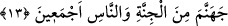

buyrulmuştur: “Bu iş oldu bitti, fakat sen görmedin, görseydin korkunç bir durum
görmüş olacaktın.”
et-Te’vîlâtü’n-Necmiyye’de der ki: “Günahkarlardan dünyâ ehli olanlara işâret
etmektedir. Onların günahı, Rableri katında başları dik olarak yaratıldıktan sonra
başlarını dünyâ ve dünyânın şehvetlerinin en aşağısına eğmeleri/sokmalarıdır.
Mîsak günü “Ben sizin Rabbiniz değil miyim?” ilâhî hitabını işittiklerinde, başlarını
kaldırmış ve: “Evet, Sen bizim Rabbimizsin” (el-A’râf, 7/172) demişlerdi. Fakat
dünyâ ve şehvetleri ile onların şeytan tarafından süslenmesiyle imtihana tâbi
tutuldukları zaman, tabîatları ile onlara meyledip başlarını öne eğdiler. Böylece
dünyânın şehvetlerini taleb konusunda dört ayaklı hayvanlar gibi oldular. Nitekim Allah
Teâlâ: “Onlar hayvanlar gibidir; hatta daha da sapıktırlar.” (el-A’râf, 179)
buyurmuştur. Çünkü hayvanların dünyânın şehvetlerini taleb konusunda tabîat ve
yaratılışlarından gelen bir sapıklıkları vardır. Zâten onlara Allâh’a kulluk
emredilmemiş ve şehvetler yasaklanmamıştır ki onlar için emir ve nehye muhâlefet
dalâleti/sapıklığı hâsıl olsun.
Nefsin dünyâya ve şehvetlerine meyli ile insanın tabîî dalâlette hayvanlarla ortaklığı
vardır. Ayrıca muhâlefet dalâleti/sapıklığı insana mahsustur. Bu yüzden de böyle
kimseler, hayvanlardan daha sapık oldular. Böyleleri, dünyânın şehvetlerine doğru
başlarını eğerek yaşadıkları gibi, yaşadıkları hal üzere öldüler. Sonra öldükleri hal
üzere Rablerinin huzurunda başlarını önlerine eğmiş olarak haşr olunacaklardır. O gün
onları dehşet hâkimiyeti altına alacak ve utanma duygusunun altında ezilmiş bir halde,
hiçbir özrün kabul edilmediği günde özür dileyecek, hiçbir îtirâfın fayda vermediği
günde îtirafta bulunacaklardır.
Sa‘dî (k.s.), Bostân’da der ki:
Şimdi gaflet yakasından başını çıkar
Ki yarın utançla önüne bakmayasın.
Gözün varken şimdi yaş dök,
Ağzında dilin varken af dile.
Can her zaman bedende,
Dil her zaman ağızda kalmayacaktır.
13. Biz dilesek, elbette herkese hidâyetini verirdik. Fakat, “Cehennemi hem
cinlerden hem insanlardan bir kısmıyla dolduracağım” diye benden kesin söz